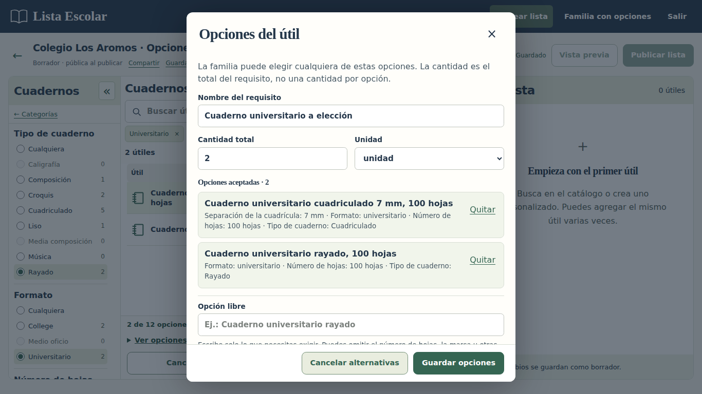
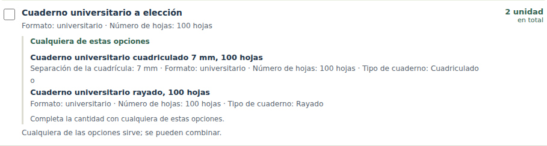
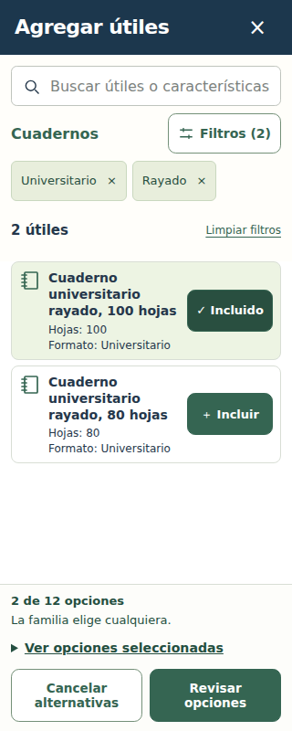
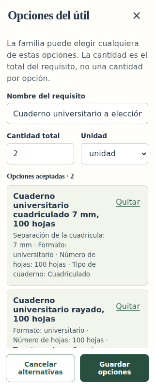
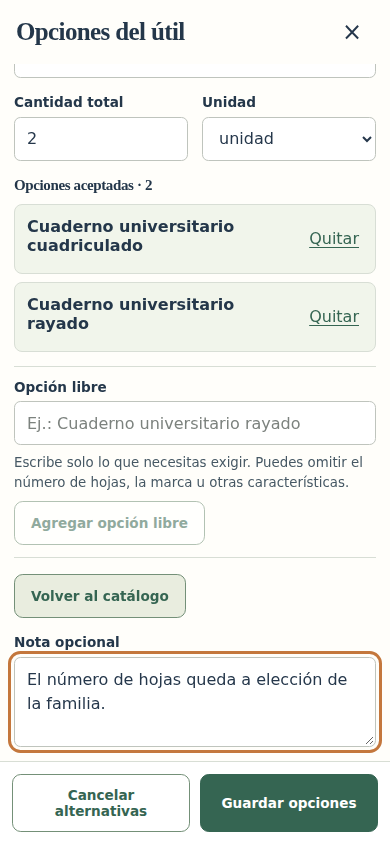
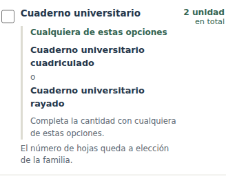
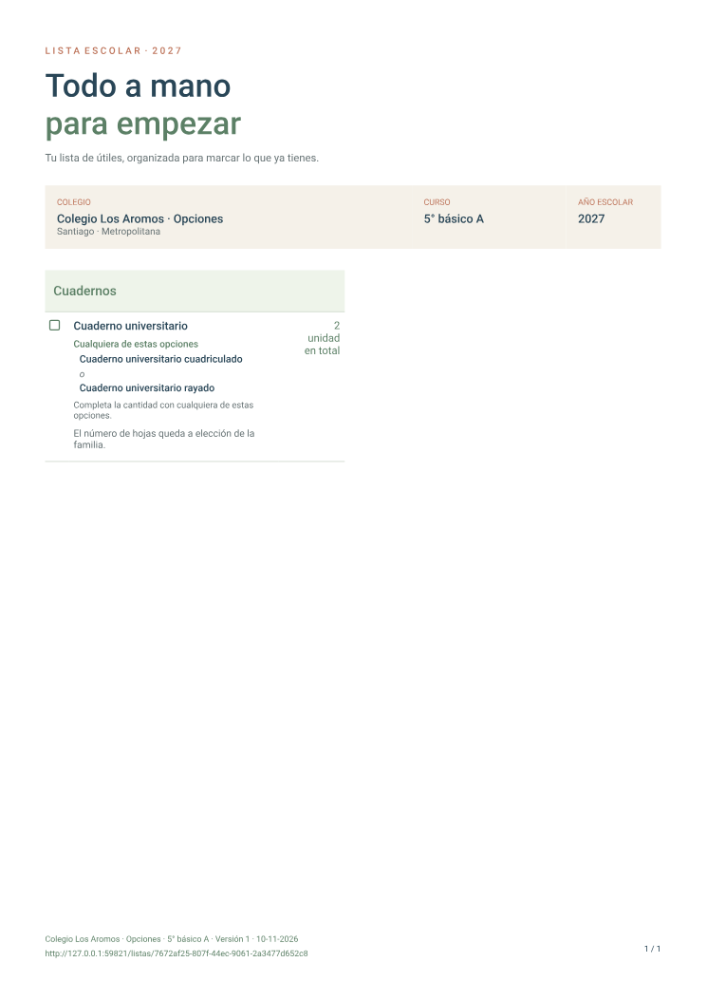

Un útil, varias opciones válidas
Una fila puede pedir Cuaderno universitario y aceptar cuadriculado o rayado. La familia completa la cantidad indicada con cualquiera de las opciones y marca un solo útil como conseguido.
La cantidad corresponde a la fila completa. Las opciones se guardan dentro de esa necesidad. Usa filas separadas cuando necesites cada artículo por separado.
Capturas reales de la aplicación local con cuentas y datos sintéticos en PostgreSQL desechable. Abre una imagen para verla a tamaño completo.
Revisar y publicar una sola necesidad
El editor reúne las opciones elegidas, permite ajustar el nombre común y conserva una cantidad, una unidad y una nota para el grupo. La lista publicada muestra claramente qué alternativas acepta.




Elegir y revisar en una pantalla de 320 px
Las opciones seleccionadas se conservan al buscar o cambiar filtros. Antes de guardarlas, el editor puede revisar el conjunto y la cantidad total.




Dejar características a elección de la familia
También se pueden escribir opciones generales. Por ejemplo, aceptar un cuaderno universitario cuadriculado o rayado y dejar libre el número de hojas. Solo se muestran las características incluidas por quien crea la lista.




La misma elección en el PDF
El documento conserva el nombre común, todas las opciones y la nota. Cada necesidad tiene una casilla y su cantidad total, también cuando se imprime.

Los otros dos diseños, Barra lateral y Fichas, mantienen las mismas opciones y cantidades. La validación también cubre grupos largos que ocupan varias páginas.